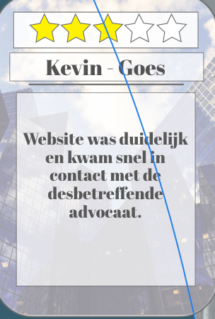
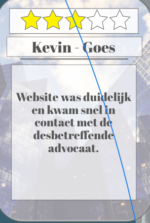

Personen- en familierecht
Personen- en familierecht ziet niet alleen op problemen rondom echtscheiding, alimentatie, maar ook op problemen rondom kinderen, zoals omgang, ondertoezichtstelling of uithuisplaatsing. Kortom alle problemen die te maken hebben met, wat de wet omschrijft als, ‘familierechtelijke’ betrekkingen. Vaak is niet duidelijk wat uw rechten en plichten zijn in dit verband. Wordt u geconfronteerd met een familierechtelijk probleem, dan is het eerste wat wij u kunnen bieden een gedegen advies in een gesprek op korte termijn. Wij proberen, samen met u, om een zo goed mogelijke oplossing te formuleren voor het probleem. Soms is dit een oplossing in overleg met de wederpartij, soms is het nodig om de rechter te betrekken en via een zgn verzoekschriftenprocedure deze te vragen een beslissing te geven. Steeds meer familierechtzaken kennen een internationale component. Partijen wonen niet langer in één land, of zijn destijds getrouwd in een ander land dan Nederland. Een voordeel van ons kantoor is dat wij de internationale juridische omgeving scherp in het vizier hebben. Internationale consequenties van de juridische procedures, variërend van verdeling van vermogen tot gevolgen voor bijvoorbeeld verblijfsvergunningen, kunnen wij hierdoor onderkennen en worden bij het advies aan u meegenomen. Kortom, u bent voor uw familierechtelijk probleem bij ons aan het goede adres.
Met wie kunt U hier contact over opnemen?
Mv. Janny Bakker
Mv. Eline Fitzgerald
Internationaal recht
Personen- en familierecht ziet niet alleen op problemen rondom echtscheiding, alimentatie, maar ook op problemen rondom kinderen, zoals omgang, ondertoezichtstelling of uithuisplaatsing. Kortom alle problemen die te maken hebben met, wat de wet omschrijft als, ‘familierechtelijke’ betrekkingen. Vaak is niet duidelijk wat uw rechten en plichten zijn in dit verband. Wordt u geconfronteerd met een familierechtelijk probleem, dan is het eerste wat wij u kunnen bieden een gedegen advies in een gesprek op korte termijn. Wij proberen, samen met u, om een zo goed mogelijke oplossing te formuleren voor het probleem. Soms is dit een oplossing in overleg met de wederpartij, soms is het nodig om de rechter te betrekken en via een zgn verzoekschriftenprocedure deze te vragen een beslissing te geven. Steeds meer familierechtzaken kennen een internationale component. Partijen wonen niet langer in één land, of zijn destijds getrouwd in een ander land dan Nederland. Een voordeel van ons kantoor is dat wij de internationale juridische omgeving scherp in het vizier hebben. Internationale consequenties van de juridische procedures, variërend van verdeling van vermogen tot gevolgen voor bijvoorbeeld verblijfsvergunningen, kunnen wij hierdoor onderkennen en worden bij het advies aan u meegenomen. Kortom, u bent voor uw familierechtelijk probleem bij ons aan het goede adres.
Meer zakenMet wie kunt U hier contact over opnemen?
Mv. Janny Bakker
Mv. Eline Fitzgerald